GUI DESCRIPTION
The new SiDiMaT19xA tools basically consists of two main panels “Control panel and Graphs panel”. The control panel contains settings and the graphs panel displays the plots of the measured signal. (See next figure).
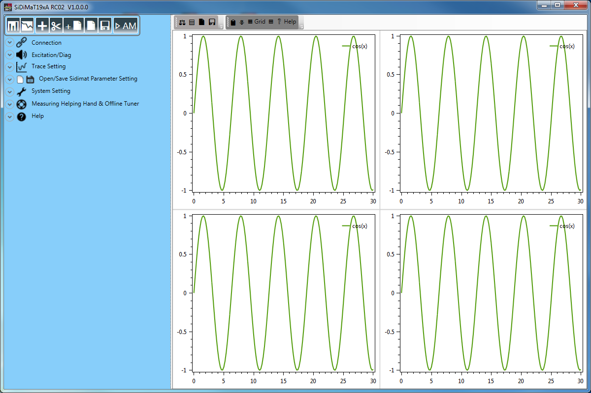
Control Panel
The control panel contains on the top a control buttons and a few setting tabs “Con-nection, Graphs, Excitation, Trace Setting …etc”.
Control Buttons Bar
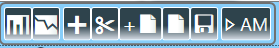
The control buttons bar consists of a few buttons to switch the between time and frequency response plots and to save, cache, open, save and add sidimat19xa measurement.
| Control Item | Description |
|---|---|
| Toggles to the time/spectrum plot view. | |
| Toggles to the frequency response plot view. | |
| Caches the current sidimat19x measurement. | |
| Deletes the last cached sidimat19x measurement. | |
| Adds a sidimat19x measurement to the current one. | |
| Opens a sidimat19x measurement. | |
| Saves the current sidimat19x measurement. | |
| Opens an auto measurement file and executes it. |
Table: Control buttons bar
Connection Tab
The “Connection” tab allows you to connect or disconnect to a controller.
Figure 4.1.2: Connection tab.
- Use "Connect" button to establish the connection with the controller.
- Use “Disconnect” button to disconnect the communication.
- Use “Terminate Comm Server and Connect” button to close the Comm Server ses-sion, if one is already started and to connect with a new session. This option is rec-ommended after a communication trouble.
- Use “Update Comm Ports list” button to refresh lists of the available com ports.
Figure 4.1.3: Connect Page after a successful connection with controller. 4.1.3 Excitation/Diag Tab Using the excitation tab the noise injection point, the excitation setting “type and pa-rameters” and the excitation filter settings and usage could be adjusted.
Figure 4.1.5: Excitation/Diag Tab.
Control Item Description
Click “Accept Change” button to accept the modification of the excitation setting and to send it to the controller.
Specifies the excitation signal type.
Toggles the noise filter usage On/Off and specifies the excitation filters.
Specifies the injection node “signal” of the excitation signal. Table 4.1.2: Excitation Tab Control Items.
| Excitation Type | Parameters |
|---|---|
| White Noise | (1) “Gain [-1,+1]” the gain range [-1,+1] corresponds to [-32000, +32000 digits]. |
| Sine Wave | (1) “Gain [-1,+1]” the gain range [-1,+1] corresponds to [-32000, +32000 digits]. (2) Sine wave frequency in Hz. |
| Duty Cycle | (1) “Gain [-1,+1]” the gain range [-1,+1] corresponds to [-32000, +32000 digits]. (2) High Period in millisecond. During this peri-od the signal amplitude equals the adjusted “Gain”. (3) Low Period in millisecond. During this period the signal amplitude is set to zero. |
| Chirp Sine “recursive” | (1) “Gain [-1,+1]” the gain range [-1,+1] corresponds to [-32000, +32000 digits]. (2) Start “lowest” frequency of the chirp sine. (3) End “Highest” frequency of the chirp sine. (4) Time Period of the chirp sine in second. |
Table 4.1.3: Excitation Types and their Parameters.
Trace Setting Tab
The trace setting tab allows to configure all the trace parameter.
Control Item | Description -- | -- 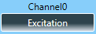 | Click “Channel0” button to select the first signal to be traced. 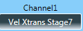 | Click “Channel1” button to select the second signal to be traced. 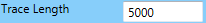 | Specifies the trace length. | Specifies under sampling rate. 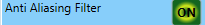 | Toggles the usage of the Anti-Aliasing filter On/Off. 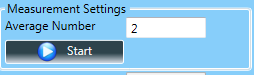 | Specifies the average number of the meas-urement. Starts/Stops the measurement. 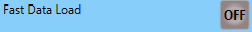 | This option appears only for firmware with fast data acquiring support. Enables this op-tion to accelerate the trace data acquiring. Table 4.1.4: Trace Setting Tab Control Item.
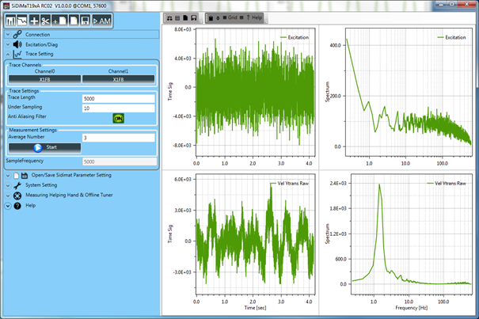 Figure 4.1.6: Trace Setting Tab.
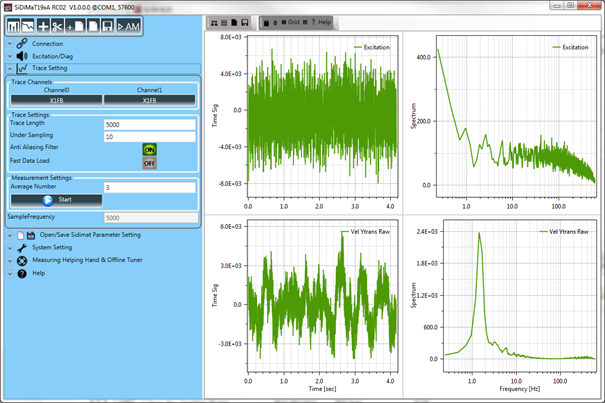 Figure 4.1.7: Trace Setting Tab with fast Data Load Support.
Open/Save Sidimat Parameter Setting Tab
Control Item | Description -- | -- | Click to load sidimat parameters from a si-dimat configuration file “SiDiMaT19xAConfig”. | Click to save the actual sidimat parameters to a sidimat configuration file “Si-DiMaT19xAConfig”. Table 4.1.6: Save/Load Sidimat Parameter Setting Control Items.
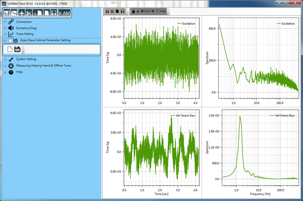 Figure 4.1.9: Save/Load Sidimat Parameter Setting Tab.